Chapter One is open
Your coming-of-age summer, not alone.
Join the early interest list for Trendies Global — a community for making new friends, expanding your circle and shaping real-life Chapter One plans together.
200k+ in under 24h
safe public plans
global flag wall
shaped together
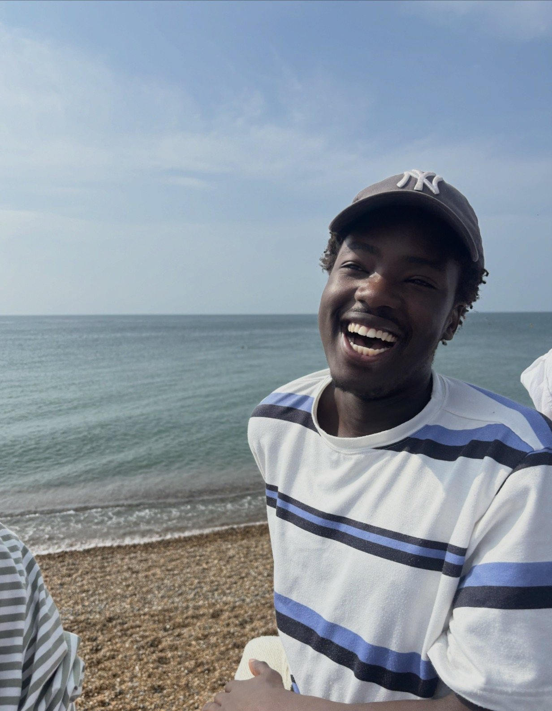
What this is
An interest list for a coming-of-age community.
Trendies Global is for people who want to make new friends, expand their circle and help shape safe, public, real-life plans together.
Join the interest list
Tell us where Chapter One should start.
Add your name if you want your coming-of-age summer, not alone. Your answers show where people are, what plans they want, and what would make it feel safe.
Manifesto
Dear Trendies,
A short note from Tende on the meaning behind Trendies and why Chapter One starts with connection.
You may wonder what a “Trendie” even is. It is a word I use for people who share the same energy for life: romanticisers, dreamers, main-character people, and those who do not just follow trends, but live with curiosity, hope and intention.
I started Trendies because I know what it feels like to have so many dreams and so much energy, but still struggle to find people around me who align with that — people who see the bigger picture too.
Trendies Global is a coming-of-age project for people who want to build real human connection. It is for anyone who wants their coming of age, but does not want to do it alone.
The aim is simple: meet in safe, fun, public environments, expand our circles, make new friends, and help shape a new era of human connection together.
Everything is voluntary, and everyone should use their own judgement. Come with care, respect, and the desire to make this chapter feel real.
Love, Tende.
Stay trendy.
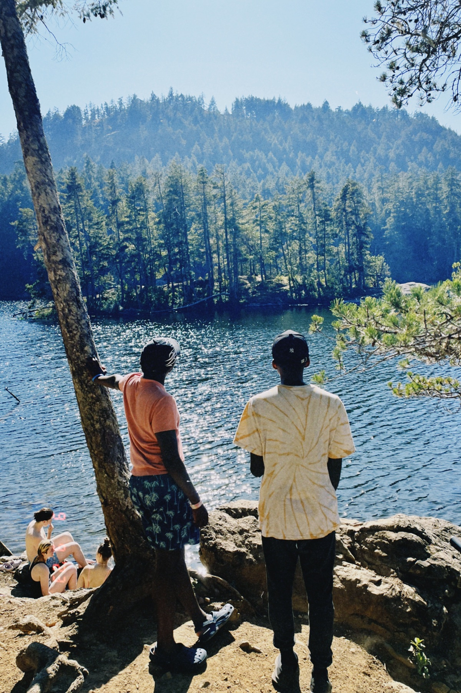
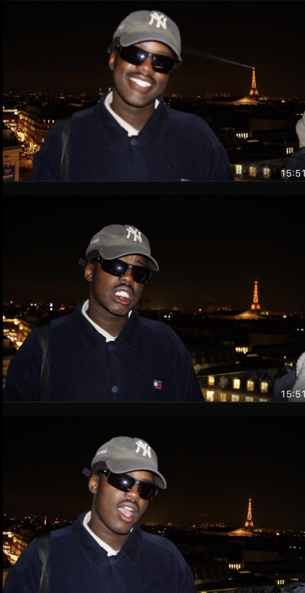
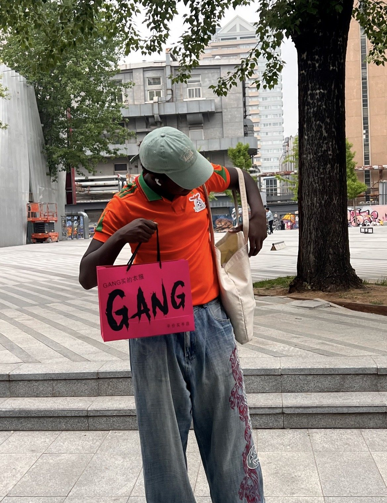
A coming of age
Summer is that strange in-between.
A coming of age is not one perfect movie scene. It can be a picnic, music in the park, card games, good conversation, and the relief of realising you do not have to do this chapter alone.
Read Tende's note
What is a coming of age? It is something we keep seeing on our screens, hearing in songs, and saving in our funny little machines: the hope that this season of life might feel free, cinematic and full of discovery.
I have travelled across continents and regions, often moving somewhere new every three or four weeks. What stayed with me was not how different everyone was. It was how familiar the in-between felt everywhere.
Being on the edge of adulthood, leaving teenagehood, becoming an adult, or simply becoming yourself is wonderfully confusing and always changing. Nobody has it fully figured out. I am not trying to solve it. I just believe so many of us are longing for community, and for people to sit with while we discover who we are.
Trendies is allowed to evolve. Maybe it grows, maybe it changes, maybe one day it becomes something completely different. But even if one person joins me and my friends for a picnic, plays cards, shares a few jokes and life stories, and carries that afternoon forward, that matters. We are all mosaics of the people, places and moments we meet.
This came from returning home after seeing the world and realising that sometimes all you want is a group of people to sit in the park with: music, a cute picnic, good conversation and no pressure to already belong.
Summer can be a strange in-between. Without the structure of school or university, it can feel like everyone already has their group except you. It is not as easy as being a kid, knocking on a door and becoming friends because you are the same age. So this summer, my friend and I decided to change that. Shall we?
Stay trendy to be like Tende.
Chapter reel
Proof it can feel real.
Small scenes from the kind of coming-of-age chapter Trendies is trying to make easier to find: friends, movement, nature, music, jokes and somewhere to belong.
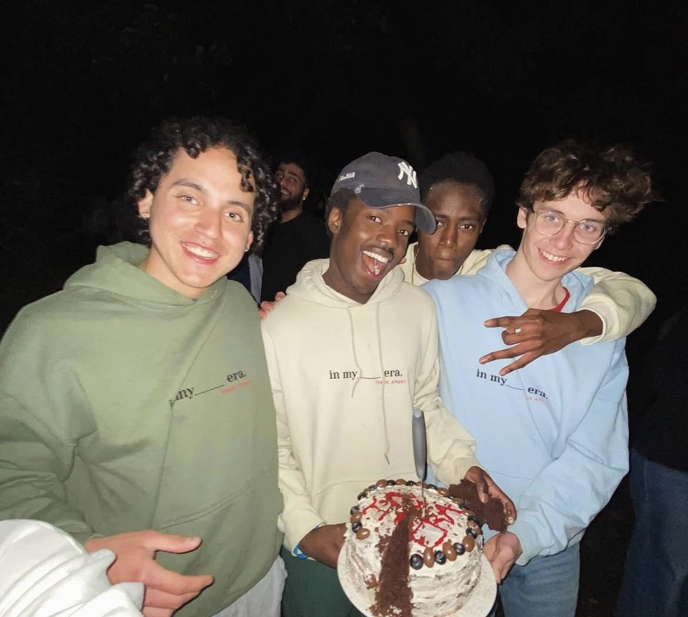
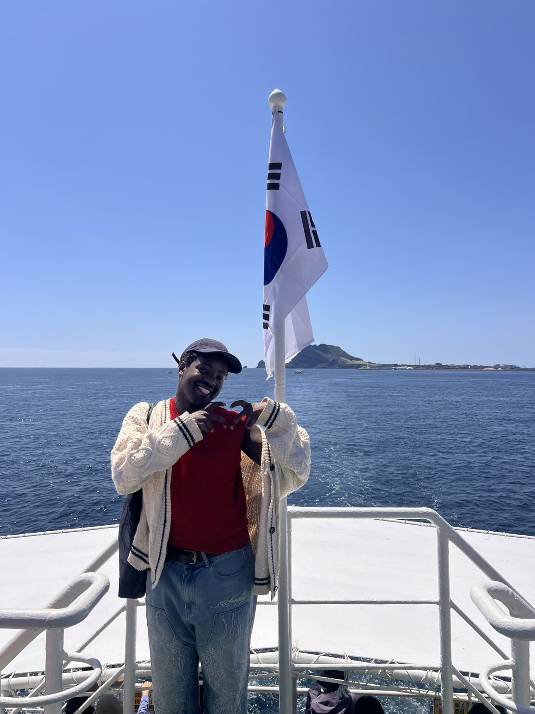
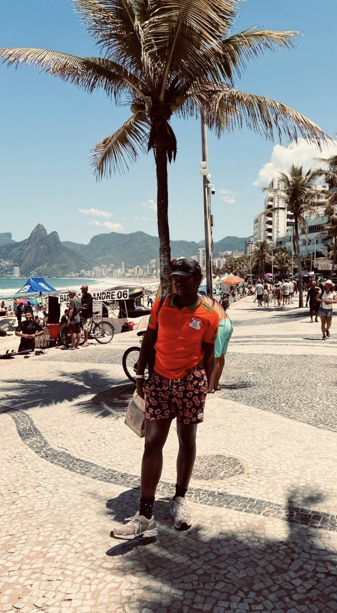
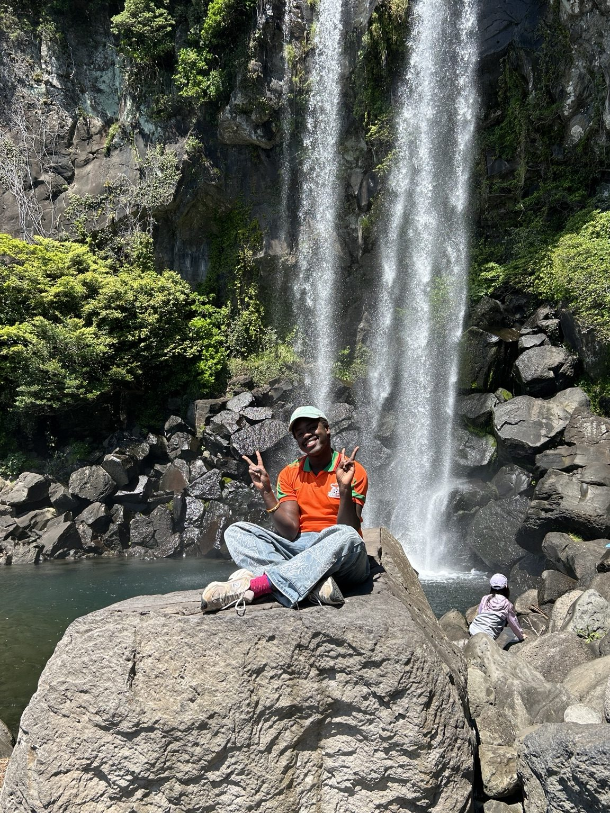
Chapter scenes
Small scenes, clear purpose.
Trendies is meant to turn the online longing for a coming-of-age summer into simple real-life scenes: a picnic, a bike ride, a city walk, a beach day, music, and people who actually want to make plans.
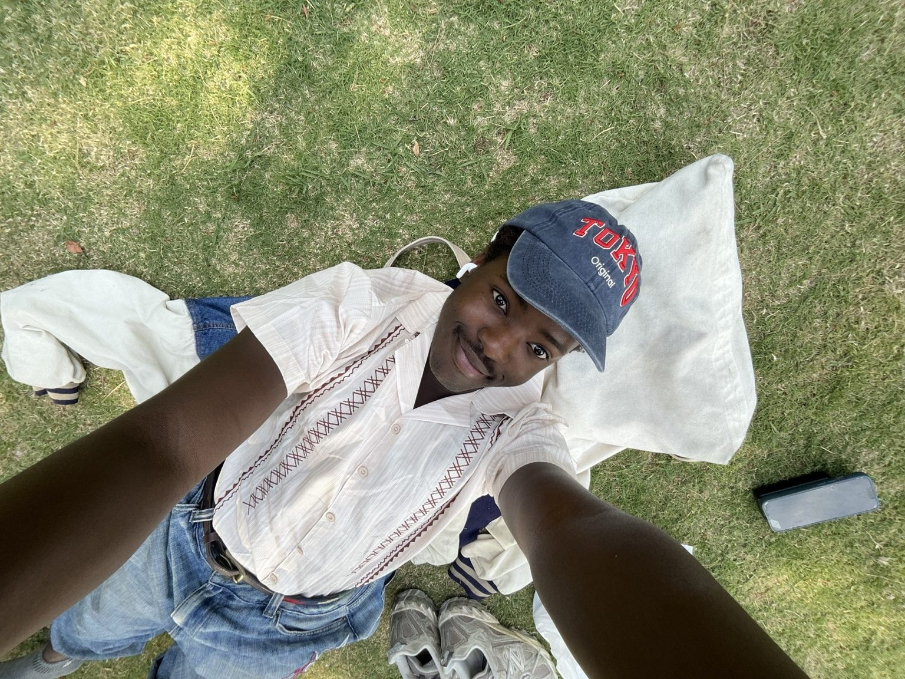
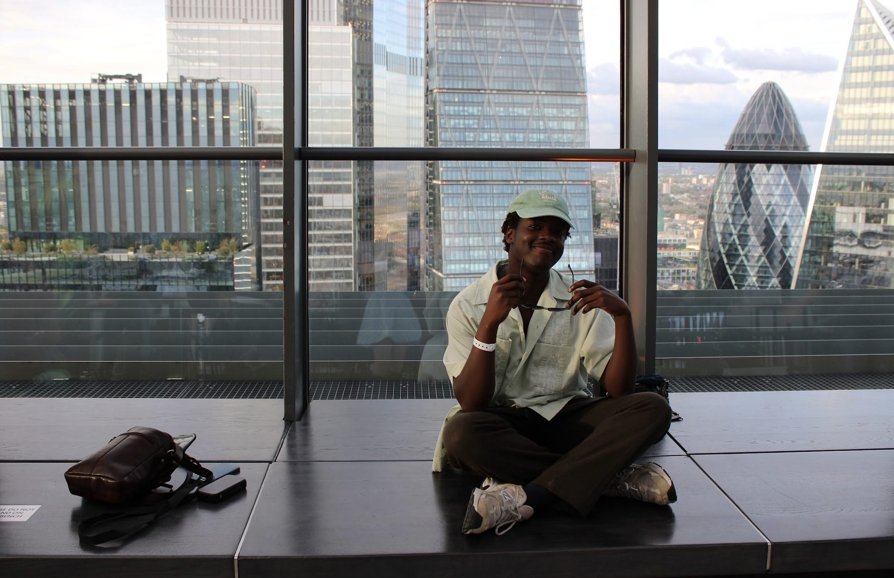
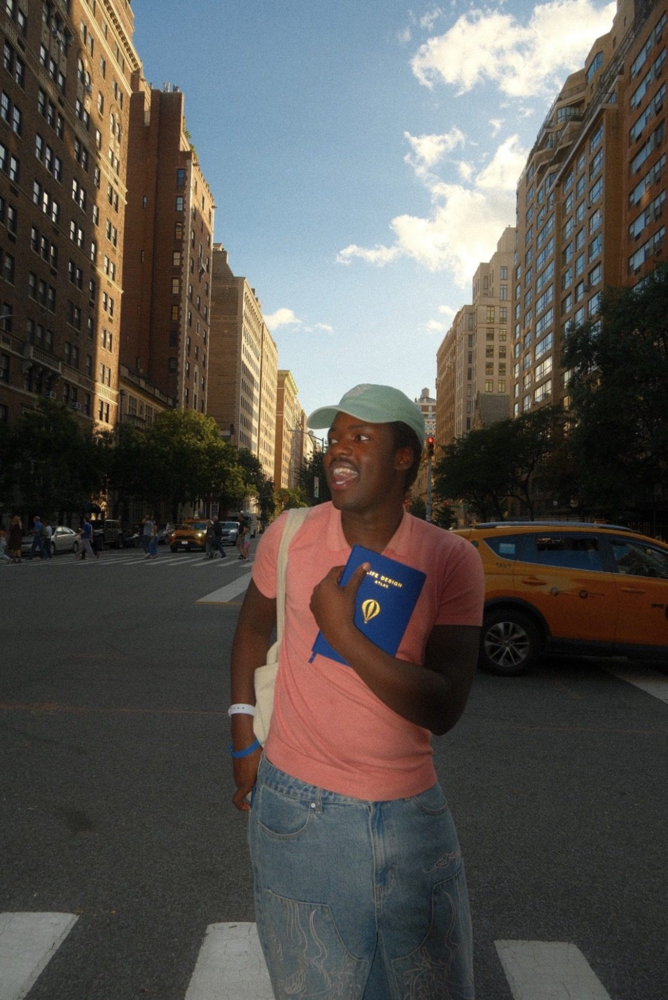
Live global flag wall
Pin your country.
Choose your country. Your flag joins the wall and the count updates live as Trendies join from around the world.
The flag wall is warming up.
Live wall
Say what this summer should feel like.
Wall notes save as pending for review before going public.
Live wall
I want a summer where I stop waiting for someone else to invite me.
Prompt deck
Start the conversation.
Original coming-of-age prompts for group chats, picnic blankets and first hangs.
The platform
A social hub for real-life summer chapters.
Trendies is idea-stage and shaped by Trendies: safe public plans, new friends, city chapters and memories that happen offline.
Low-pressure daylight plans.
See your city with new people.
Creative moments and proof you lived.
Expand your circle in real life.
Field guide
How to have your coming of age.
Pick somewhere public. Bring one friend or arrive alone. Say yes to one small plan.
Join the Instagram channelPark picnic, gallery walk, market loop or beach day.
Time, place, what to bring, and who can come.
Photos, tiny clips, one line on the wall.
Chapter notes
Signals from Trendies.
Short launch notes for the community hub.
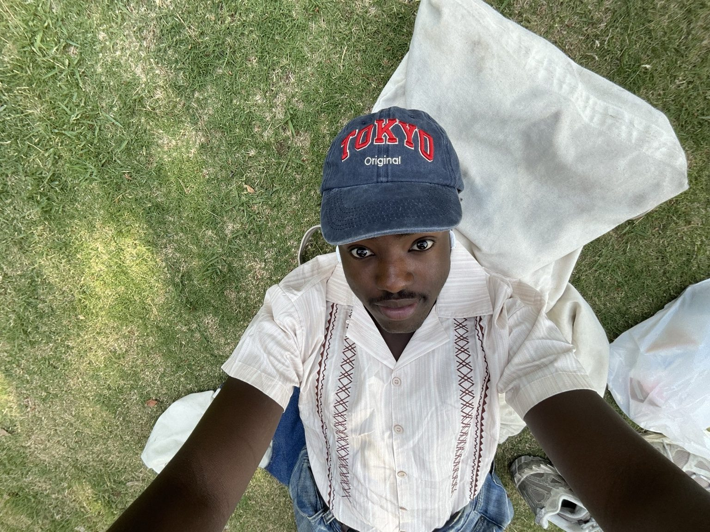
Chapter OneWhat Chapter One Could Feel Like
Picnics, bike rides, live music, card games and exploring somewhere new.
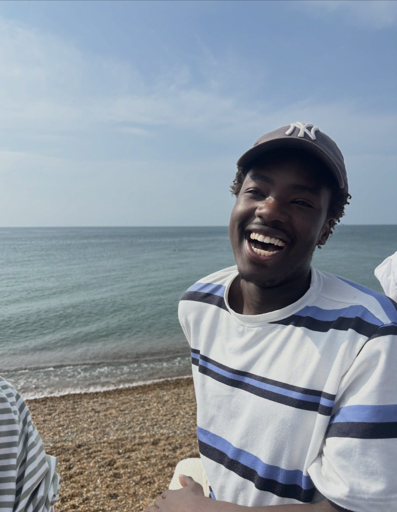
CommunityWhy the Flag Wall Matters
Every flag is a signal that someone wants this in real life.
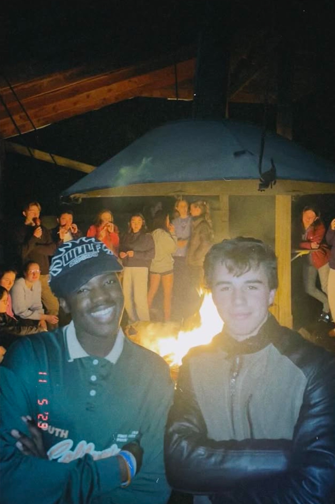
SafetySafe Public Plans
Daylight, public places, clear details and the option to bring a friend.
Build with us
Help create this reality.
For brands, venues, city helpers, creatives and sponsors who want to support Chapter One.